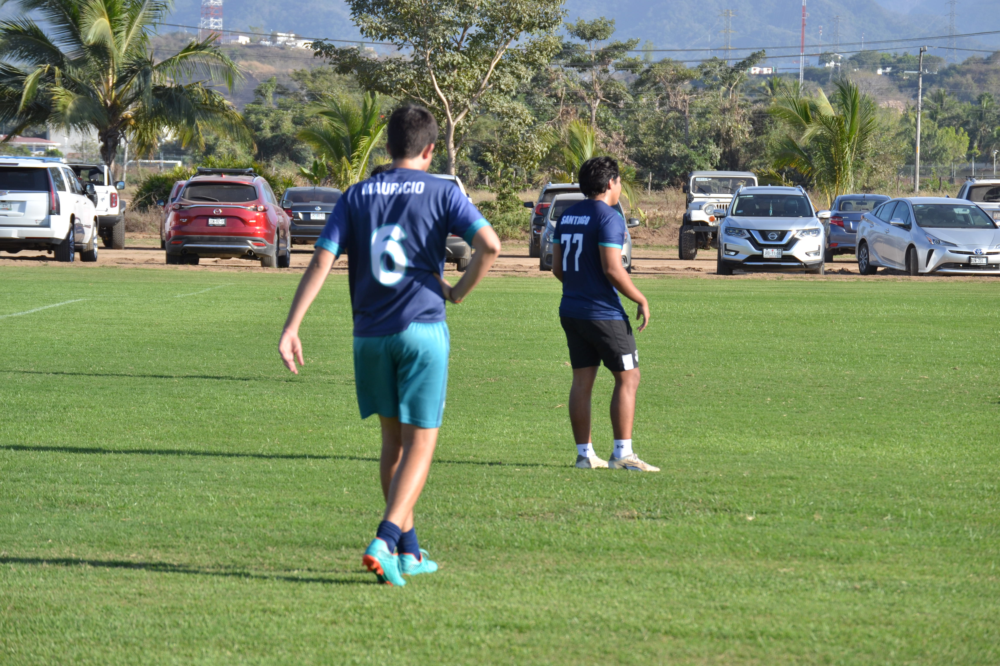
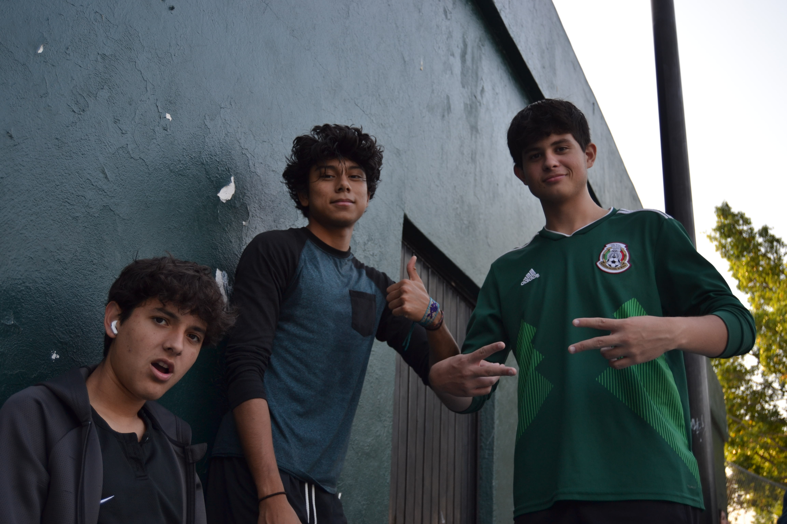

| Mauricio Ríos Escamilla | Prof. Azucena Cervantes | Marzo 9, 2023 | 6°A | Práctica 6 |
me gusta mucho estar con mis amigos y familia. Me
apasiona mucho estar en mis tiempos libres escuchando
música y jugando videojuegos. El poder estar con
gente que quiero mucho lo disfruto y
siempre me la paso muy bien. Soy una
persona floja, pero cuando algo me
interesa le invierto mucho de mi tiempo.
Disfruto mucho estar en la escuela para
poder pasar tiempo con mis amigos y
pocas clases que en verdad disfruto.
Tengo como sueño poder entrar a estudiar Ingeniería Mecánica en el Tecnológico de Monterrey y
poder concluir esta carrera con conocimientos necesarios de la mecánica. Tengo en mente
principlamente enfocarme más en la mecánica de coches y sueño con poder tener un taller
de alto nivel en el futuro.
En esa foto estaba en un partido de fútbol contra México Americano, logramos sacar la victoria después
En la segunda foto fue en la cena navideña que organizó la prepa. Fue un evento muy lindo, me la pasé con mis amigos
En la tercera foto fui a jugar billar con unos amigos y mi hermano al Sports Bar Champions en la Marina. Jugué después de
Gracias a mis papás soy quien he llegado a ser el día de hoy. Me brindaron valores, me enseñaron todo lo base para poder aprender
Gracias a esta escuela que me han enseñado lo suficiente para triunfar en muchos lugares. Gracias a Harkness estoy preparado para mi etapa universitaria, para poder afrontar
poder concluir esta carrera con conocimientos necesarios de la mecánica. Tengo en mente
principlamente enfocarme más en la mecánica de coches y sueño con poder tener un taller
de alto nivel en el futuro.
Foto 1
En esa foto estaba en un partido de fútbol contra México Americano, logramos sacar la victoria después
de un partido duro por jugar. Fue uno de los mejores partidos que he jugado.
Foto 2
En la segunda foto fue en la cena navideña que organizó la prepa. Fue un evento muy lindo, me la pasé con mis amigos
y con gente que quiero mucho. Hubo mucha comida bien rica que llevaron los papás.
Foto 3
En la tercera foto fui a jugar billar con unos amigos y mi hermano al Sports Bar Champions en la Marina. Jugué después de
mucho tiempo y repartí unas cuantas clases a mis amigos.
Gracias a mis papás soy quien he llegado a ser el día de hoy. Me brindaron valores, me enseñaron todo lo base para poder aprender
en todos lugares. Me inculcaron respeto, honestidad, amabilidad, entre otras muchas cosas. Gracias a ellos he podido seguir adelante
y poder ser feliz en lo que soy, me han brindado todo lo posible para que pueda tener una vida feliz
Gracias a esta escuela que me han enseñado lo suficiente para triunfar en muchos lugares. Gracias a Harkness estoy preparado para mi etapa universitaria, para poder afrontar
cualquier reto que se me ponga en frente. He aprendido para poder ser un líder, alguien que pueda demostrar capacidad necesaria para cualquier reto. Por desgracia no tuve
oportunidad de ir a algún intercambio, pero siempre se me fueron ofrecidos y apoyados cuando lo intenté. Gracias a Harkness por brindarme nuevos valores, ideas y pensamientos
que me servirán en mi vida

